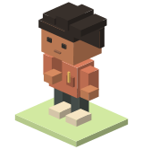
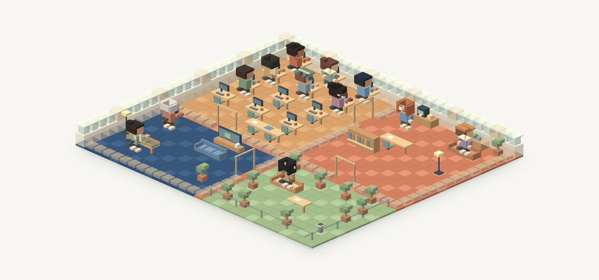
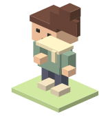
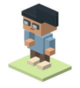

01THE IDEA
Why I Am Building Crewlo
A visual home for coding agents: the idea behind Crewlo, the voxel studio, and what I want to make easier.
Read the story →THE CREWLO JOURNAL · BY HAFID IDRISSI
The ideas, small experiments and design decisions behind Crewlo. A personal look at building a visual home for coding agents, block by block.
Read the first three stories ↓

01THE IDEA
A visual home for coding agents: the idea behind Crewlo, the voxel studio, and what I want to make easier.
Read the story →
02A VERIFIED EXAMPLE
What a small read-only Codex check and a documented Telegram reply tell us about Crewlo—and where that evidence stops.
Read the story →
03DESIGN NOTES
How characters, desks and quiet animations can explain agent activity without getting in the way of the work.
Read the story →